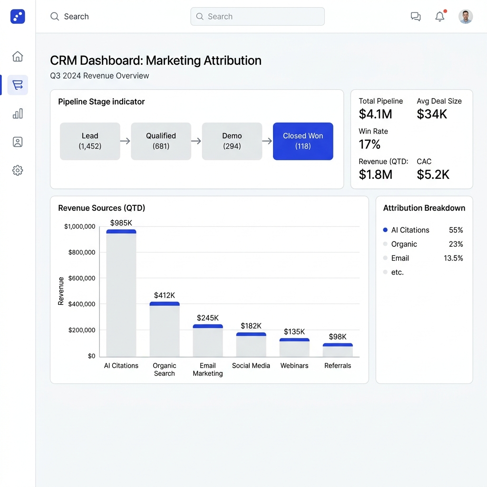

Resultados reales
No te mostramos clics vacíos ni gráficos de impresiones sin valor comercial. Medimos oportunidades de negocio creadas y citas en modelos de lenguaje.
Atribución Financiera Directa
Así es como se visualizan las fuentes de ingresos reales en el CRM de un cliente típico de Thallo tras 6 meses de estrategia GEO y contenido de autoridad.

LexVantage: De la invisibilidad a ser la referencia en LegalTech
LexVantage facturaba $1.2M ARR pero era invisible para los compradores de software de automatización de contratos. Diseñamos un reporte analítico de velocidad de contratos recopilando datos de 300 despachos.
El Impacto Comercial:
"El reporte diseñado por Thallo fue citado por más de 40 blogs del sector legal. Lo más importante: cuando un comprador le pregunta a ChatGPT '¿cuál es la mejor herramienta de contratos para medianas empresas?', la IA redacta una respuesta recomendándonos y citando los datos del reporte de velocidad."
— Carlos M., CEO de LexVantageFinFlow: Dominando la visibilidad GEO en el sector FinTech
FinFlow competía contra gigantes muy financiados por las palabras clave principales de Google. Optimizamos su web para Generative Engine Optimization (GEO) y distribuimos su framework de flujos de caja en LinkedIn.
El Impacto Comercial:
"En lugar de pelearnos en Google tradicional pagando costes altos por clic, nos enfocamos en que las inteligencias artificiales nos recomendaran en sus respuestas. Capturamos leads calificados que venían directamente educados por las IAs."
— Sarah D., Head of Marketing de FinFlowConsigue estos resultados para tu negocio
Hablemos sobre tu producto y tu mercado para diseñar un sistema a tu medida.
Agendar Auditoría